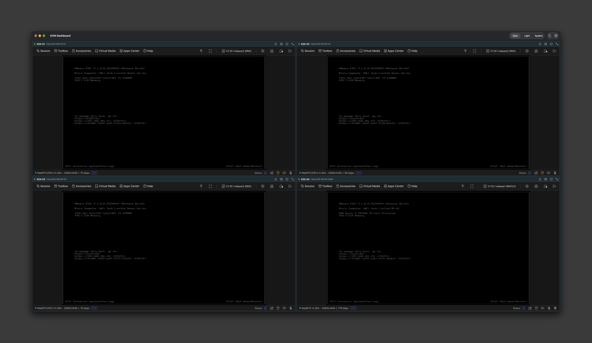
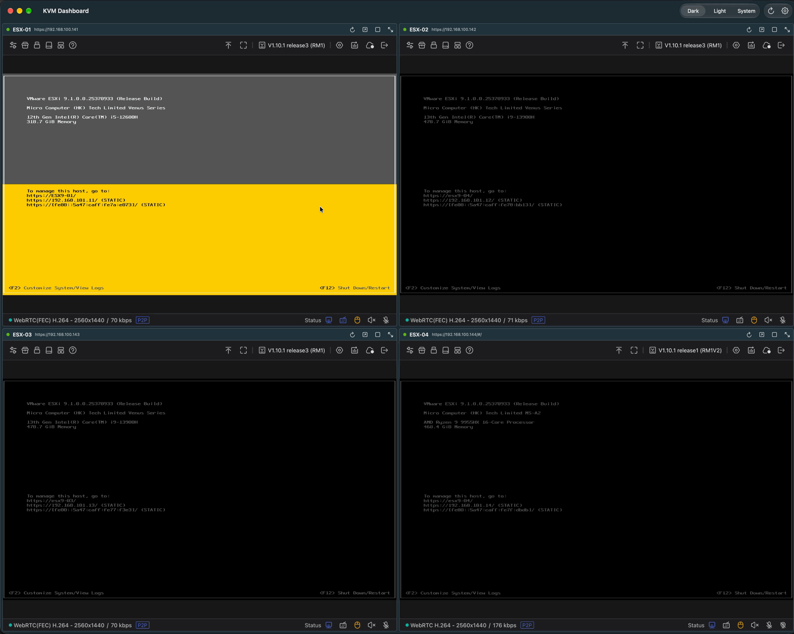
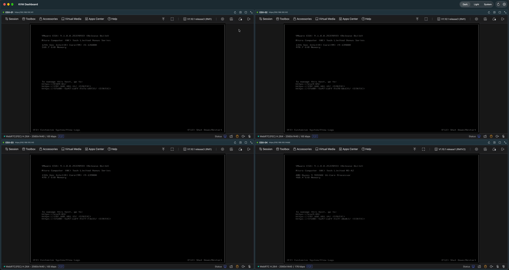
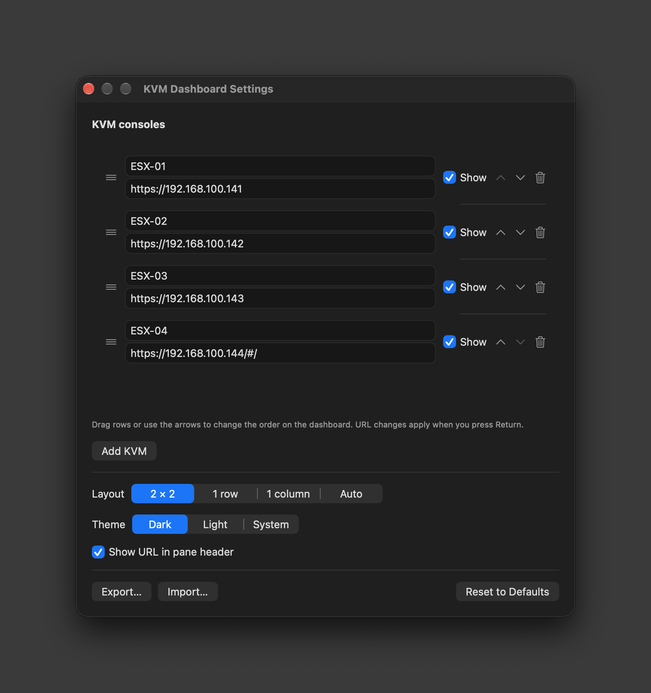

Home Lab | KVM Dashboard

KVM Dashboard: Four GL.iNet Comet KVMs, One Window 🚀
A few days ago I wrote a Blog about the GL.iNet Comet KVMs. I have now added one to every ESX host in my home lab. I really like how they work. Within a day I had a new thought. Four KVMs means four browser windows, and I was tiling them by hand every time I wanted to watch the hosts boot.
So I built a small Mac app that shows all four consoles in one window. I called it KVM Dashboard, and I wanted to share it with the vCommunity.
What is KVM Dashboard? 💡
KVM Dashboard is a native macOS app that:
- Shows your GL.iNet Comet (GLKVM) consoles in one window, 2 × 2 by default
- Lets any single console go full screen or maximize in the window with one click
- Lets you add, rename, hide, and re-order consoles in Settings
- Remembers your KVM logins between launches
- Uses a VMware Clarity / Aria Operations dark theme, with Light and System options
If you have ever had four ESX host consoles open in four browser tabs, this is the same thing in one window.
Working Demo:

My Lab 🔧
- 4 × GL.iNet Comet KVM.
- ESX hosts
esx9-01…esx9-04running ESX 9.x - KVM consoles at
https://192.168.100.141…https://192.168.100.144 - Tested on macOS 27.0.1, Apple silicon
Why Not Just a Web Page? 🤔
That was my first try. A single static HTML page with four iframes, one per KVM. It would run anywhere, which is what I wanted.
All four panes stayed blank.
The KVMs did not send any headers that block framing. The real problem was the login. The GLKVM web app needs a session, and inside an iframe on a different page that session is treated as third-party. Browsers block third-party cookies and storage now, so the console app never starts.
A native app gets around this. Each console runs in its own WebKit view as a top-level page, the same as opening it in its own browser tab. It also lets me accept each KVM's self-signed certificate for that one host only, which a web page can't do.
Mac App → one WebKit view per KVM → GL.iNet Comet KVM → ESX host
The Dashboard 📊
Four ESX hosts at the DCUI, one window. Each pane has its own header with a status dot, the host name, and the URL.
KVM Dashboard (Screen Shot):
Pane Controls 🖱️
Every pane has four icons. Hovering one highlights it and shows its name in the header.
| Icon | Action |
|---|---|
| ↻ | Reload the console |
| ↗ | Open the console in your default browser |
| ▢ | Maximize in the window. Click again to go back to the grid |
| ⤢ | Full screen. Hover the top-right corner for Exit Full Screen, or press ⌃⌘F |
Full Screen (GIF):

Settings ⚙️
⌘, opens Settings. You can:
- Rename a KVM, change its URL, or hide it from the dashboard
- Re-order the consoles by dragging rows or using the arrows
- Pick a layout: 2 × 2, 1 row, 1 column, or Auto
- Pick a theme: Dark, Light, or System
- Export and Import the configuration as JSON
Re-ordering or changing the layout does not reload a console. Your sessions stay logged in.
Settings (Screen Shot):

Security Notes 🔒
- No passwords are stored by the app. You log in to each KVM yourself, once. The session is kept in the app's WebKit data store, the same way Safari keeps it.
- Certificates are trusted per host. The app accepts the self-signed certificate only for the KVM URLs you configured. Anything else gets normal certificate checks.
- Links that open a new tab go to your default browser, not into the dashboard.
- It only connects to the KVM URLs you configure.
Wish List | How Did I Do? ✅
- ✅ Show four KVM consoles in one window
- ✅ Full screen button on each console
- ✅ Settings to choose and re-order the consoles
- ✅ VMware Operations dark theme, plus Light and System
- ✅ Hover highlights and labels on the pane icons
- ✅ Custom app icon with a keyboard and mouse
- ⏳ ⌘1–⌘4 to jump a console to full screen
- ⏳ A signed, notarized download so you don't need to build it
My original ask was a static web page that runs anywhere. That didn't survive contact with the KVM login, but the native app does everything else I wanted.
Try It 🔗
You need macOS 14 or later and the Xcode Command Line Tools. Full Xcode is not required.
1. Install the Command Line Tools if you don't have them:
xcode-select --install2. Clone the repo and build:
git clone https://github.com/dalehassinger/KVM.git
cd KVM
mac/build.sh3. Copy the app to Applications:
cp -R "mac/build/KVM Dashboard.app" /Applications/4. Open KVM Dashboard. When macOS asks to find devices on your local network, click Allow.
5. Press ⌘, and change the four URLs to your own KVM addresses.
6. Log in to each pane once.
The app is ad-hoc signed, not notarized. If you build it on your own Mac it opens with no warning. If you copy it to a different Mac, run this once on that Mac:
xattr -dr com.apple.quarantine "/Applications/KVM Dashboard.app"The full README in the repo covers troubleshooting, the JSON format, and how to change the icon.
Home Lab Tips 💡
- Give each KVM a Static IP so the dashboard URLs never change.
- Name the panes after the hosts. It sounds obvious, but it stops you typing into the wrong DCUI.
- Remote access just works. I use Twingate over Starlink, as I covered in the Comet KVM post. If you can reach the KVM URL, the dashboard can show it.
- Set the EDID on each Comet to match your display for the sharpest image when a pane goes full screen.
For the Techies 🤓
- SwiftUI + WKWebView, one Swift file, roughly 600 lines
- Built with
swiftcfrom the Command Line Tools. No Xcode project - The Command Line Tools don't ship the SwiftUI macro plugin, so
@Statewon't compile. The code uses a tinyObservableObjectwrapper instead - The web views are cached per KVM and re-parented when the layout changes, which is why re-ordering never drops a session
- The app icon is drawn in code from SF Symbols, so it can be regenerated with one script
- I built it with Claude Code. It found the iframe login problem, made the switch to a native app, and did the build and the icon. I steered, tested, and kept asking for changes.
- GitHub Repository Link
I always appreciate feedback. Let me know what you like, and what you would add next. See you in the vCommunity!